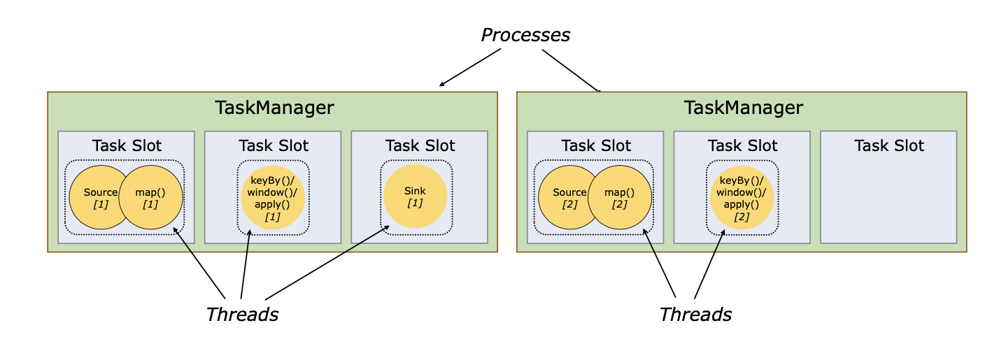
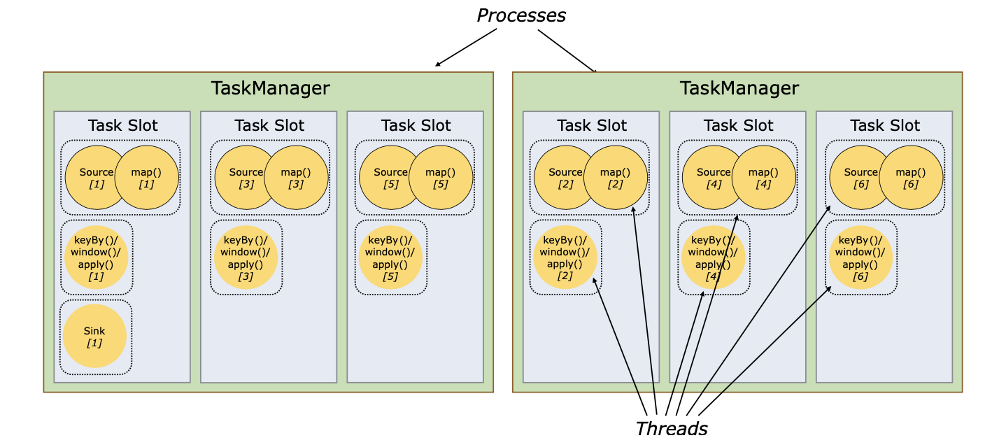

1.3 Flink基本架构
Flink也是遵循master-slave的架构设计原则，其分为JobManager和TaskManager，JobManager也叫master，TaskManager也叫worker，组件之间的通信借助于akka框架。
JobManager就像老板，管理着任务调度，协调checkpoint，恢复失败节点等，一个集群至少有一个JobManager以保持高可用，其中一个为leader，其他为后备人员。
TaskManager就像工人，直接执行任务，也是至少一个TaskManager。
1.3.1 Task Slots
官网上说每个task slot就表示TaskManager的一部分资源的集合。看下图，每个worker(TaskManager)就是一个JVM进程，在这个进程中可能会执行一个或多个subtask，要控制每个worker接受多少subtask，这就是task slot要做到的事。你看第一个process里第一个task slot有两个不同算子的子任务，上面不是说每个算子运行于不同的线程之中吗？没错，其实flink中可以把subtask串成一个一个的task，每一个task在一个线程中执行，下图就是source和map算子的source[1]和map[1] subtask串成一个task，并在一个线程中执行，它们各自另外的一个subtask组成task在第二个进程的第一个task slot中运行，也是占用一个线程。

即使不同任务之间的subtask也可以共享task slot，只要它们都是同一个job，不同的是，在每个task slot中不同的任务有不同的线程来执行：

总结一句话：一个work就是一个JVM进程，一个JVM进程可以有多个task slot，每个task slot可以运行多个task，每个task只能运行于独立的线程之中，每个task也可能包含多个subtask，相同算子的不同subtask可能运行于不同的work之中。